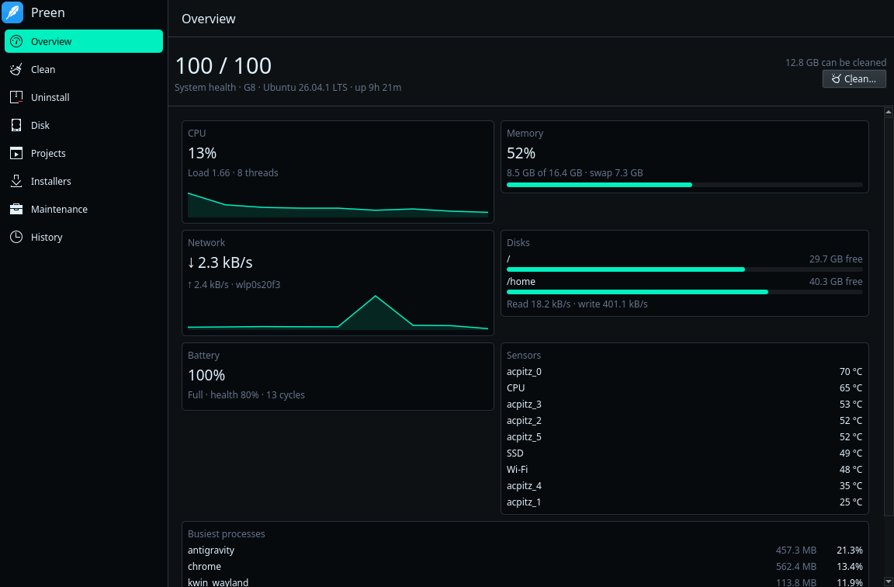

Linux system care without background daemons
Clean caches, uninstall packages with leftover files, inspect folder sizes, and monitor telemetry. Runs when you invoke it, and stops when you close it.
$curl -fsSL https://preen.yousufkhan.uk/install.sh | sh
Interface and features
Switch through the tabs below to inspect the desktop application and command-line engine.

Quick start guide
Every command presents items for your review before deleting anything. Use dry-run mode to preview.
Installation
Universal scriptInstall Preen across Linux distributions. It automatically installs the desktop package on Ubuntu/Debian or places the standalone CLI binary in /usr/local/bin on Arch Linux and Fedora.
To force the CLI engine without GUI on any distribution: curl -fsSL https://preen.yousufkhan.uk/install.sh | sh -s -- --cli.
System Clean
Safe previewScan caches, package leftovers, and system logs. The dry-run flag calculates reclaimable space without modifying files.
When you are ready to remove items, run preen clean. Preen asks for your confirmation before deleting.
Application Uninstaller
Trash protectionList installed applications across apt, snap, Flatpak, and AppImage formats with their identifiers and residual folders.
To preview uninstallation of an application: preen uninstall apt:btop --dry-run.
Project Build Directories
DeveloperReclaim space from build directories in your coding folders, including node_modules, .venv, target, and cache folders.
Configure additional paths in ~/.config/preen/purge_paths.
Live Telemetry Watch
Real-timeDisplays a live terminal dashboard of CPU usage, memory, disk throughput, network metrics, and thermal readings.
For automated monitoring scripts, pass --json to stream JSON objects.
Disk Analyzer
StorageAnalyze folder sizes starting from any path. Hard-linked caches like uv and pnpm are counted accurately without inflation.
Deletions made inside Disk Analyzer go directly to your desktop Trash.
Operations History
Audit trailReview every operation executed by Preen. All deletions are recorded in an operation log for your verification.
Add paths or item IDs to ~/.config/preen/whitelist to exclude them permanently.
Safety architecture
Preen includes safeguards against accidental system breakage or data loss.
Single Delete Validator
Every file deletion passes through internal/safe. It blocks top-level directories, home folders, ~/.ssh, ~/.gnupg, keyrings, passwords, and symlinks leading into them. Fuzz tests guard this boundary.
Zero Background Daemons
Preen does not install system services, cron jobs, or background watchers. When you close the window or exit the CLI command, zero processes remain running on your machine.
Restricted Root Helper
Preen never runs as root. System tasks invoke pkexec preen helper <action>, which only executes an explicit list of named actions. Removing a package that would pull down a desktop environment is refused.
Trash Retention
Uninstalled application leftovers and Disk Explorer removals are moved to the Trash rather than erased. If you change your mind, items can be restored from your desktop Trash.
Running App Detection
Running applications are skipped automatically. Preen checks process tables and lock files for Chrome, Firefox, Electron apps, and Gradle to avoid cleaning open caches.
Audit Logging & Whitelist
Every action is logged to ~/.local/state/preen/operations.log. You can exclude any path or item identifier by listing it in ~/.config/preen/whitelist.
Comparison with other tools
A breakdown of capabilities across Linux and cross-platform tools.
| Feature | Preen | BleachBit | btop | CCleaner | Mole |
|---|---|---|---|---|---|
| Platform and interface | |||||
| Runs on Linux | Yes | Yes | Yes | No (Windows/Mac) | No (macOS only) |
| Desktop app | Yes (Qt 6 Kirigami) | Yes (GTK) | No (Terminal) | Yes | Separate paid app |
| Command line with JSON | Yes | Partial (no JSON) | No | Few switches | Yes |
| License | GPL-3.0 | GPL-3.0 | Apache-2.0 | Proprietary | GPL-3.0 (CLI) |
| Cleaning capabilities | |||||
| App caches, logs, temp files | Yes | Yes | No | Yes | Yes |
| Developer caches (npm, uv, Cargo, Go) | Yes | No | No | No | Yes |
| Package manager leftovers | Yes (apt, snap, kernels) | Partial (no kernels) | No | N/A | Yes (Homebrew) |
| Project build folders (node_modules, .venv) | Yes | No | No | No | Yes |
| Downloaded installer files | Yes | No | No | No | Yes |
| Preview before deleting | Yes | Yes | N/A | Yes | Yes |
| Applications and disk | |||||
| Uninstall apps with leftovers | Yes (apt, snap, Flatpak, AppImage) | No | No | Partial | Yes |
| Disk space explorer | Yes | No | No | Yes | Yes |
| Live telemetry dashboard | Yes | No | Yes | No | Yes |
| System maintenance (DNS, font/menu cache) | Yes | No | No | Registry only | Yes |
Preen does not perform browser password/cookie cleaning, secure shredding, startup management, or GPU telemetry. For file wiping, use BleachBit; for process signaling, use btop.
Frequently asked questions
Common questions about Preen's design, platform support, and safety model.
Does Preen run background daemons or services?
No. Preen installs no system services, cron jobs, or background watchers. When you exit the application or CLI command, zero processes remain in memory.
Which Linux distributions does Preen support?
Preen provides desktop packages for Ubuntu 24.04 and 26.04, Kubuntu with KDE Plasma 6 (Kirigami Qt 6.10), and Debian 12+. Standalone CLI binaries run on any modern Linux distribution including Arch Linux and Fedora.
How does Preen protect against accidental deletion?
All deletions pass through internal/safe, which strictly blocks root paths, home folders, SSH keys, GPG keys, and browser credentials. App uninstaller and disk explorer deletions move items to the desktop Trash.
Does Preen delete user configuration files?
No. By default, package uninstallation preserves user configuration directories in ~/.config. Configuration files remain unless you explicitly select them for removal.
Can I exclude specific paths or items from cleaning?
Yes. Add any path or item identifier (such as apt-cache) to ~/.config/preen/whitelist. Preen halts if this file cannot be read, ensuring your exclusions are always respected.
Can I automate Preen in CI or maintenance scripts?
Yes. Every command supports --dry-run, --yes, and --json. The JSON stream delivers structured events suitable for automated parsing.
Support Preen on Patreon
I build open-source tools and share what I learn along the way. If Preen saves you time or space on Linux, consider supporting development on Patreon.